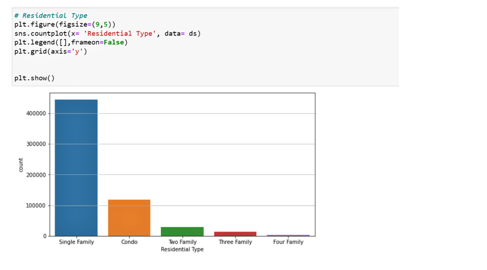
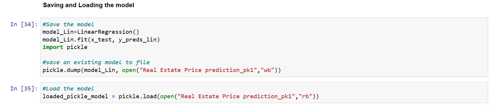

Market Basket Analysis
using the apriori Algorithm with python

Data Source: Kaggle
Libraries and Packages: Scikit-learn, python-Pandas, Numpy
Implementation steps
1. Theoretical background and Objective
2. Data Setup
3. Data Cleaning & Exploratory Data Analysis (EDA)
4. Building the Model
5. Data Visualization
1. Theoretical Background and Objective
Market Basket Analysis is a technique used by retailers to uncover associations between items that customer places in their shopping baskets.The main objective of Market basket analysis enables sales and marketing teams to develop more effective product placement, pricing, cross-sell, and up-sell strategies. It is a strategy used to design layouts basedon customer's shopping behaviour an purchase histories.Market basket analysis is divided into Descriptive, predictive and inferential.
- Apriori
- SETM Algorithm
- AIS
- Frequent pattern Tree
Benefits
- Optimizing of in-store operations such as product placement and cross-selling to boost sales
- Optimizes marketing strategies and campaigns
- Helps in demographic data analysis
- Identifies customer behavior and pattern
- Helps to increase Return on Investment
Steps to implementation in python
- Determine minimum support
- find out subsets with higher support than minimum support
- Find all the rules for these subsets with higher confidence than minimum confidence.
- Sort these association rules in specified order.
- Analyze the rules along with their confidence and support.
2. Data Setup
- Importing the dataset and required libraries

3. Data Cleaning & Exploratory Data Analysis (EDA)
Exploratory data analysis was done on the datasets to investigate and summarize their main characteristics. This was done using data visualization methods. However, the data was rid of any nulls prior to analysis. 4. Feature Engineering
The features in the dataset was separated into numerical and categorical. This helped in extracting the feature of interest in our model training. In this project, the some of the categorical feature selected was converted into numerical data using the Column transformer before its subjected it into training and testing.
Categorical Features
- Town.
- Property Type
- Residential Type
- Assessed Value(selected).
- Sales Amount(target) The data was split into training and testing.
Numerical Features

5. Choosing an Estimator
The estimator selected were the Linear Regression, Lasso and Elastic-Net and fitted into the training and testing data
6. Model Evaluation
The model was evaluated using several scoring metrics to measure the performance of the model on the training data. This was done using the R-squared, Mean Absolute Error (MAE), Mean squared Error.7. Saving and Loading
The pickle module was used to save the datasets to be deployed. 